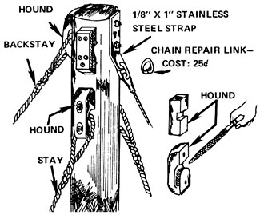

Hina: We Built A Live-On Boat For $300! Part Ii
These details will help you build your own sailboat!
By Bill Hyslop
March/April 1976
The oh-so-proper yachting press would have you believe that you must spend at least $2,000 to own a twenty-foot cruising sailboat. Hogwash! My lady and I built and outfitted Hina for less than $300 . . . and $90 of that was spent on a suit of used sails alone!
The result: a crisply performing vessel that far surpassed our highest hopes. Hina sails beautifully! On a 2-1/2-month, 400-mile cruise around upper Lake Michigan-under all kinds of conditions-she kept us safe, dry, and reasonably comfortable. In heavy weather, she took five- and six-foot waves easily and her classic lines drew admirers at every port.
Once we'd constructed the hull of our 21 -foot cruising sailboat (HINA: We Built a Live-on Boat for $300), we were ready to tackle the job of outfitting it.
Since a builder's personal fancies can be brought most strongly into play on a sailing vessel's interior, you probably won't want to finish off the inside of your boat exactly as we did ours. Whatever you do, however, the basic steps should still closely parallel our own. As much for suggestion as for certain use, then . . . here are some of the finishing touches we added to Hina:
HULL FINISH: Instead of using paint, varnish, or fiberglass, we impregnated Hina's hull with a mixture of copper naphthenate wood preservative. The finish permits the wood to breathe, and requires no sanding or scraping.
NUTS AND BOLTS: As you can see from looking at these diagrams, outfitting Hina required many bolts . . . almost all 1/4 inch in diameter. We found we could save money by purchasing 1/4-inch threaded steel rods and large quantities of washers and nuts . . . and then cutting our "bolts" as we needed them.
BULKHEADS: The first internal strengthening structures we added were bulkheads in the form of seats and storage compartments. By connecting both sides to the ship's bottom, they helped tighten up and stabilize the vessel.
Here's a cutaway view of the bulkhead, the ballast keel, and the beam that runs between bulkheads and to which the keel is bolted.
RUDDER: Of course, no boat-not even Hlna!-can be kept under control without a rudder. Our vessel's steering setup is quite rudimentary . . . but it works just fine.
Your local scrap yard can outfit you with rugged, dependable rudder hardware for next to nothing. All you need are some short pieces of angle iron (or you can make bent steel straps of your own), a hacksaw, and an electric drill. We rustproofed all of our steel fittings by coating them with plastic asbestos roof coating, which worked well.
In this drawing you see every part of the rudder depicted twice . . . once from a distance and once up close. The rudder hinge, for instance-which we made by bending a 1/8-inch X 2-inch steel strap around a 1/2-inch pipe and welding the two together-is shown with the entire rudder and the transom in the upper right, and by itself in exploded view in the center.
OARLOCKS: Despite the fact that-at a length of 21 feet- Hina was a bit large and heavy for sustained rowing, we included oarlocks in our design. We made them from small, shaped wooden blocks attached to the hull as shown.
MAST AND BALLAST: We also utilized the bulkheads on Hina as supports for our mast. The mast itself was simply a planed-down warehouse beam. (A straight, sturdy tree would have done as well.) We bolted our mizzen holder stoutly to a thick cross-member called the mast step, and rested this upside-down-T construction to the fore and aft bulkheads.
Our ballast keel was sort of unusual . . . an 18-inch-deep section of steel I-beam with 6-inch flanges. This hefty piece of equipment measured in at 5-1/2 feet long and 300 pounds. The ballast keel, of course, hangs down from the centerline of the vessel and provides an inertial pull against swaying and tipping. It keeps the boat from bobbing about like a cork.
This drawing depicts the internal framing to which both the ballast keel and mast are anchored. Notice the interlocking relationship between the deck beam (A), bulkhead (B), cross-member (C), and stringers (D). This system of construction spreads stress loads from the mast and keel over a large area.
RIGGING: Once the boat is all put together, you face the delicate task of rigging the sails. Here's how we rigged Hina:
Most ships use either, a slotted mast or a metal track to hold the mainsail to its support. Both methods are costly and subject to sudden jamming. So, we went back to the 1800's and adapted an old-time common lashing technique for holding our sail. It was inexpensive and simple and worked well. It never jammed on us. For strength and safety's sake, you might note, we put grommets in the sail's lashing holes.
The jib sail runs 'along a rope which is held to the mast by a chain repair link which cost all of 25 cents.
The sail lashing also functioned as a downhaul, holding the leading edge of the mainsail taut. In addition, this diagram shows the boom, which was simply a 2 X 2 lashed to the mast.
We used the following sails:
MAIN: "Widgeon" class dinghy
JIB: "Rhodes 19"
A good Genoa jib for the Hina would be the "INT. 14". But it will cost close to $100. For used sails, write to Bacon & Associates, 528 2nd St., Annapolis, Md. 21403.
At deck level, the stays were fastened by adjustable lanyards and eyes. This effective, ancient attachment method cost only about $2.00 for all the stays on the boat, which was a savings of about $50.00 over common turnbuckles. The chain plate shown here-which connected the lanyards to the hull-can also be seen in position at the upper left end of the diagram (already shown) illustrating the mast and ballast keel.
Our mast stays were held in place at the top by "hounds". We carved these from smallish wood scraps. Make sure all sharp edges are sanded down to protect the rope.
Instead of using pulleys to raise and lower our sails'
ropes, called "halyards", we made simple guides that
proved quite satisfactory.
|
A short piece of angle iron can be used instead of the bent steel strap, but will be slightly off center |
|
|
 |
|
|
|
|
|
|
|
 |
|
|